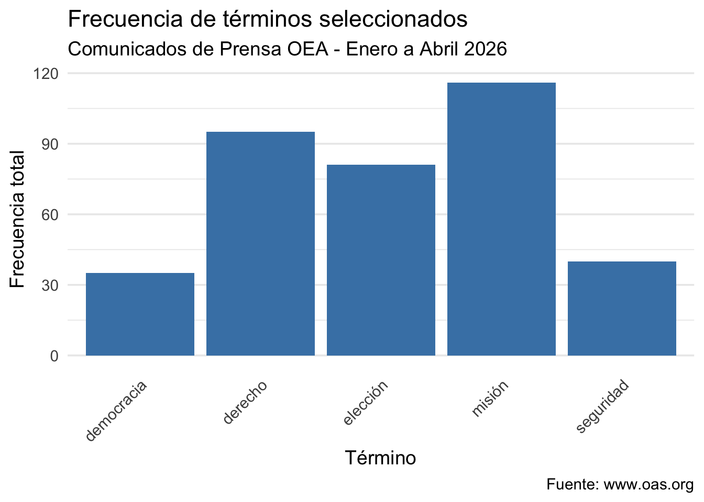

library(here)here() starts at /Users/renatagimenez/Documents/TP/MVDGimenezRenataTPssource(here("TP2/scripts/scraping_oea.R"))── Attaching core tidyverse packages ──────────────────────── tidyverse 2.0.0 ──
✔ dplyr 1.2.0 ✔ readr 2.2.0
✔ forcats 1.0.1 ✔ stringr 1.6.0
✔ ggplot2 4.0.2 ✔ tibble 3.3.1
✔ lubridate 1.9.5 ✔ tidyr 1.3.2
✔ purrr 1.2.1 ── Conflicts ────────────────────────────────────────── tidyverse_conflicts() ──
✖ dplyr::filter() masks stats::filter()
✖ dplyr::lag() masks stats::lag()
ℹ Use the conflicted package (<http://conflicted.r-lib.org/>) to force all conflicts to become errors
Attaching package: 'rvest'
The following object is masked from 'package:readr':
guess_encoding
El directorio data ya existe.
Leyendo mes: 1
Links encontrados en mes 1: 21
Leyendo mes: 2
Links encontrados en mes 2: 17
Leyendo mes: 3
Links encontrados en mes 3: 21
Leyendo mes: 4
Links encontrados en mes 4: 22
Total de comunicados a scrapear: 81
Procesando comunicado 1 de 81: https://www.oas.org/es/centro_noticias/comunicado_prensa.asp?sCodigo=AVI-008/26
Procesando comunicado 2 de 81: https://www.oas.org/es/centro_noticias/comunicado_prensa.asp?sCodigo=C-012/26
Procesando comunicado 3 de 81: https://www.oas.org/es/centro_noticias/comunicado_prensa.asp?sCodigo=C-011/26
Procesando comunicado 4 de 81: https://www.oas.org/es/centro_noticias/comunicado_prensa.asp?sCodigo=C-010/26
Procesando comunicado 5 de 81: https://www.oas.org/es/centro_noticias/comunicado_prensa.asp?sCodigo=AVI-005/26
Procesando comunicado 6 de 81: https://www.oas.org/es/centro_noticias/comunicado_prensa.asp?sCodigo=C-009/26
Procesando comunicado 7 de 81: https://www.oas.org/es/centro_noticias/comunicado_prensa.asp?sCodigo=C-008/26
Procesando comunicado 8 de 81: https://www.oas.org/es/centro_noticias/comunicado_prensa.asp?sCodigo=C-007/26
Procesando comunicado 9 de 81: https://www.oas.org/es/centro_noticias/fotonoticia.asp?sCodigo=FNC-144633
Procesando comunicado 10 de 81: https://www.oas.org/es/centro_noticias/comunicado_prensa.asp?sCodigo=D-001/26
Procesando comunicado 11 de 81: https://www.oas.org/es/centro_noticias/fotonoticia.asp?sCodigo=FNC-144628
Procesando comunicado 12 de 81: https://www.oas.org/es/centro_noticias/fotonoticia.asp?sCodigo=FNC-144622
Procesando comunicado 13 de 81: https://www.oas.org/es/centro_noticias/comunicado_prensa.asp?sCodigo=C-006/26
Procesando comunicado 14 de 81: https://www.oas.org/es/centro_noticias/comunicado_prensa.asp?sCodigo=AVI-003/26
Procesando comunicado 15 de 81: https://www.oas.org/es/centro_noticias/comunicado_prensa.asp?sCodigo=C-005/26
Error al leer: https://www.oas.org/es/centro_noticias/comunicado_prensa.asp?sCodigo=C-005/26
Procesando comunicado 15 de 81: https://www.oas.org/es/centro_noticias/comunicado_prensa.asp?sCodigo=C-004/26
Procesando comunicado 16 de 81: https://www.oas.org/es/centro_noticias/comunicado_prensa.asp?sCodigo=C-003/26
Procesando comunicado 17 de 81: https://www.oas.org/es/centro_noticias/fotonoticia.asp?sCodigo=FNC-144613
Procesando comunicado 18 de 81: https://www.oas.org/es/centro_noticias/comunicado_prensa.asp?sCodigo=C-002/26
Procesando comunicado 19 de 81: https://www.oas.org/es/centro_noticias/comunicado_prensa.asp?sCodigo=001
Procesando comunicado 20 de 81: https://www.oas.org/es/centro_noticias/comunicado_prensa.asp?sCodigo=C-001/26
Procesando comunicado 21 de 81: https://www.oas.org/es/centro_noticias/comunicado_prensa.asp?sCodigo=AVI-017/26
Procesando comunicado 22 de 81: https://www.oas.org/es/centro_noticias/comunicado_prensa.asp?sCodigo=C-025/26
Procesando comunicado 23 de 81: https://www.oas.org/es/centro_noticias/comunicado_prensa.asp?sCodigo=C-024/26
Procesando comunicado 24 de 81: https://www.oas.org/es/centro_noticias/comunicado_prensa.asp?sCodigo=C-023/26
Procesando comunicado 25 de 81: https://www.oas.org/es/centro_noticias/comunicado_prensa.asp?sCodigo=C-022/26
Procesando comunicado 26 de 81: https://www.oas.org/es/centro_noticias/comunicado_prensa.asp?sCodigo=AVI-014/26
Procesando comunicado 27 de 81: https://www.oas.org/es/centro_noticias/comunicado_prensa.asp?sCodigo=C-021/26
Procesando comunicado 28 de 81: https://www.oas.org/es/centro_noticias/comunicado_prensa.asp?sCodigo=C-020/26
Procesando comunicado 29 de 81: https://www.oas.org/es/centro_noticias/comunicado_prensa.asp?sCodigo=C-019/26
Procesando comunicado 30 de 81: https://www.oas.org/es/centro_noticias/comunicado_prensa.asp?sCodigo=C-018/26
Procesando comunicado 31 de 81: https://www.oas.org/es/centro_noticias/comunicado_prensa.asp?sCodigo=AVI-011/26
Procesando comunicado 32 de 81: https://www.oas.org/es/centro_noticias/comunicado_prensa.asp?sCodigo=C-017/26
Procesando comunicado 33 de 81: https://www.oas.org/es/centro_noticias/comunicado_prensa.asp?sCodigo=C-016/26
Procesando comunicado 34 de 81: https://www.oas.org/es/centro_noticias/comunicado_prensa.asp?sCodigo=C-014/26
Procesando comunicado 35 de 81: https://www.oas.org/es/centro_noticias/comunicado_prensa.asp?sCodigo=C-013/26
Procesando comunicado 36 de 81: https://www.oas.org/es/centro_noticias/fotonoticia.asp?sCodigo=FNC-144657
Procesando comunicado 37 de 81: https://www.oas.org/es/centro_noticias/comunicado_prensa.asp?sCodigo=D-002/26
Procesando comunicado 38 de 81: https://www.oas.org/es/centro_noticias/comunicado_prensa.asp?sCodigo=C-039/26
Procesando comunicado 39 de 81: https://www.oas.org/es/centro_noticias/comunicado_prensa.asp?sCodigo=C-038/26
Procesando comunicado 40 de 81: https://www.oas.org/es/centro_noticias/comunicado_prensa.asp?sCodigo=C-037/26
Procesando comunicado 41 de 81: https://www.oas.org/es/centro_noticias/comunicado_prensa.asp?sCodigo=C-036/26
Procesando comunicado 42 de 81: https://www.oas.org/es/centro_noticias/comunicado_prensa.asp?sCodigo=D-004/26
Procesando comunicado 43 de 81: https://www.oas.org/es/centro_noticias/comunicado_prensa.asp?sCodigo=AVI-033/26
Procesando comunicado 44 de 81: https://www.oas.org/es/centro_noticias/comunicado_prensa.asp?sCodigo=C-035/26
Procesando comunicado 45 de 81: https://www.oas.org/es/centro_noticias/comunicado_prensa.asp?sCodigo=C-034/26
Procesando comunicado 46 de 81: https://www.oas.org/es/centro_noticias/comunicado_prensa.asp?sCodigo=AVI-030/26
Procesando comunicado 47 de 81: https://www.oas.org/es/centro_noticias/comunicado_prensa.asp?sCodigo=C-033/26
Procesando comunicado 48 de 81: https://www.oas.org/es/centro_noticias/comunicado_prensa.asp?sCodigo=C-032/26
Procesando comunicado 49 de 81: https://www.oas.org/es/centro_noticias/comunicado_prensa.asp?sCodigo=C-031/26
Procesando comunicado 50 de 81: https://www.oas.org/es/centro_noticias/comunicado_prensa.asp?sCodigo=AVI-027/26
Procesando comunicado 51 de 81: https://www.oas.org/es/centro_noticias/comunicado_prensa.asp?sCodigo=AVI-025/26
Procesando comunicado 52 de 81: https://www.oas.org/es/centro_noticias/comunicado_prensa.asp?sCodigo=C-030/26
Procesando comunicado 53 de 81: https://www.oas.org/es/centro_noticias/comunicado_prensa.asp?sCodigo=D-003/26
Procesando comunicado 54 de 81: https://www.oas.org/es/centro_noticias/comunicado_prensa.asp?sCodigo=C-029/26
Procesando comunicado 55 de 81: https://www.oas.org/es/centro_noticias/comunicado_prensa.asp?sCodigo=C-028/26
Procesando comunicado 56 de 81: https://www.oas.org/es/centro_noticias/comunicado_prensa.asp?sCodigo=C-027/26
Procesando comunicado 57 de 81: https://www.oas.org/es/centro_noticias/comunicado_prensa.asp?sCodigo=C-026/26
Procesando comunicado 58 de 81: https://www.oas.org/es/centro_noticias/comunicado_prensa.asp?sCodigo=AVI-022/26
Procesando comunicado 59 de 81: https://www.oas.org/es/centro_noticias/comunicado_prensa.asp?sCodigo=C-049/26
Procesando comunicado 60 de 81: https://www.oas.org/es/centro_noticias/comunicado_prensa.asp?sCodigo=C-048/26
Procesando comunicado 61 de 81: https://www.oas.org/es/centro_noticias/fotonoticia.asp?sCodigo=FNC-144784
Procesando comunicado 62 de 81: https://www.oas.org/es/centro_noticias/comunicado_prensa.asp?sCodigo=D-006
Procesando comunicado 63 de 81: https://www.oas.org/es/centro_noticias/fotonoticia.asp?sCodigo=FNC-144771
Procesando comunicado 64 de 81: https://www.oas.org/es/centro_noticias/comunicado_prensa.asp?sCodigo=AVI-043/26
Procesando comunicado 65 de 81: https://www.oas.org/es/centro_noticias/comunicado_prensa.asp?sCodigo=AVI-042/26
Procesando comunicado 66 de 81: https://www.oas.org/es/centro_noticias/comunicado_prensa.asp?sCodigo=C-047/26
Procesando comunicado 67 de 81: https://www.oas.org/es/centro_noticias/comunicado_prensa.asp?sCodigo=C-046/26
Procesando comunicado 68 de 81: https://www.oas.org/es/centro_noticias/fotonoticia.asp?sCodigo=FNC-144755
Procesando comunicado 69 de 81: https://www.oas.org/es/centro_noticias/fotonoticia.asp?sCodigo=FNC-144753
Procesando comunicado 70 de 81: https://www.oas.org/es/centro_noticias/comunicado_prensa.asp?sCodigo=C-045/26
Procesando comunicado 71 de 81: https://www.oas.org/es/centro_noticias/comunicado_prensa.asp?sCodigo=C-044/26
Procesando comunicado 72 de 81: https://www.oas.org/es/centro_noticias/comunicado_prensa.asp?sCodigo=C-043/26
Procesando comunicado 73 de 81: https://www.oas.org/es/centro_noticias/fotonoticia.asp?sCodigo=FNC-144743
Procesando comunicado 74 de 81: https://www.oas.org/es/centro_noticias/comunicado_prensa.asp?sCodigo=D-005/26
Procesando comunicado 75 de 81: https://www.oas.org/es/centro_noticias/comunicado_prensa.asp?sCodigo=C-042/26
Procesando comunicado 76 de 81: https://www.oas.org/es/centro_noticias/comunicado_prensa.asp?sCodigo=AVI-039/26
Procesando comunicado 77 de 81: https://www.oas.org/es/centro_noticias/comunicado_prensa.asp?sCodigo=C-041/26
Procesando comunicado 78 de 81: https://www.oas.org/es/centro_noticias/comunicado_prensa.asp?sCodigo=C-040/26
Procesando comunicado 79 de 81: https://www.oas.org/es/centro_noticias/comunicado_prensa.asp?sCodigo=AVI-036/26
Procesando comunicado 80 de 81: https://www.oas.org/es/centro_noticias/fotonoticia.asp?sCodigo=FNC-144725
Se guardó 'tabla_scraping_oea.rds' en /data
=== Scraping finalizado. Total: 80 comunicados ===source(here("TP2/scripts/processing.R"))Iniciando procesamiento de texto
El directorio output ya existe.
Comunicados cargados: 80
Cargando modelo de español para udpipe...
Lematizando 80 comunicados...
Tokens tras filtrar por categoría gramatical: 13091
Tokens antes de remover stopwords: 13091
Tokens después de remover stopwords: 13007
Guardado en: /Users/renatagimenez/Documents/TP/MVDGimenezRenataTPs/TP2/output/processed_text.rds
=== Procesamiento finalizado ===source(here("TP2/scripts/metrics_figures.R"))
Attaching package: 'tidytext'
The following object is masked _by_ '.GlobalEnv':
stop_words
Loading required package: NLP
Attaching package: 'NLP'
The following object is masked from 'package:ggplot2':
annotate
Iniciando cálculo de métricas y figuras
Tokens cargados: 13007
DTM construida: 80 documentos x 2412 términos
Términos encontrados: misión, derecho, elección, seguridad, democracia
Frecuencias calculadas:# A tibble: 5 × 2
lemma frecuencia_total
<chr> <dbl>
1 democracia 35
2 derecho 95
3 elección 81
4 misión 116
5 seguridad 40Figura guardada en: /Users/renatagimenez/Documents/TP/MVDGimenezRenataTPs/TP2/output/frecuencia_terminos.png
=== Métricas y figuras finalizadas ===